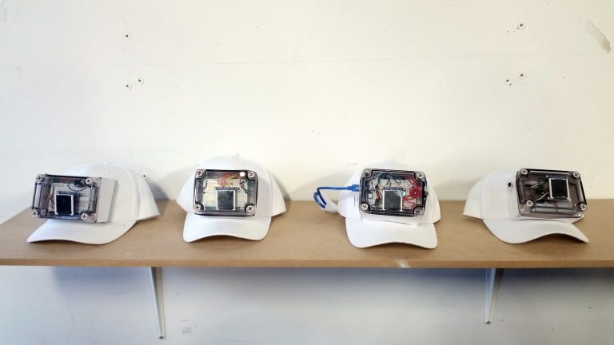

Tech-Charades was an exercise to work on project replication. The work had to both be functional, and be able to be replicated across multiple builds of the same piece.
This project saw the production of four tech-charades units; all of these could be used to play a version of charades via the on screen images. The guesser would place the cap on their head, and their partner would act out the image on screen.
During field testing found some things came to our attention which did not come up in our initial tests for this project. One prominent issue which affected the readability of the images was the difference in height between players. A simple solution was to have the wearer of the hat sit down during gameplay. A more involved solution for a future iteration would be to design an adjustable hinge for the screen to sit on top of.
Another takeaway from participating in the playtesting was our inherent bias/advantage as the designers. Because we had become familiarized with the set of images used we were much better at the game than newcomers were. Though players understood the rules just fine they did not always feel they were intuitive to act upon. For example, the ambiguity in what constituted a correct answer, which was partially left to the player to determine. Players also seemed to prefer to use either words (as in Hedbanz) or actions (as in Charades) solely (both of which our concept took inspiration from), instead of a combination of both as permitted by the rules.
This project was created through a combination of hand fabrication techniques, Arduino, and Fritzing - a tool for electronic schematics - to bring the whole concept together.
The team responosible for bringing this project together are: